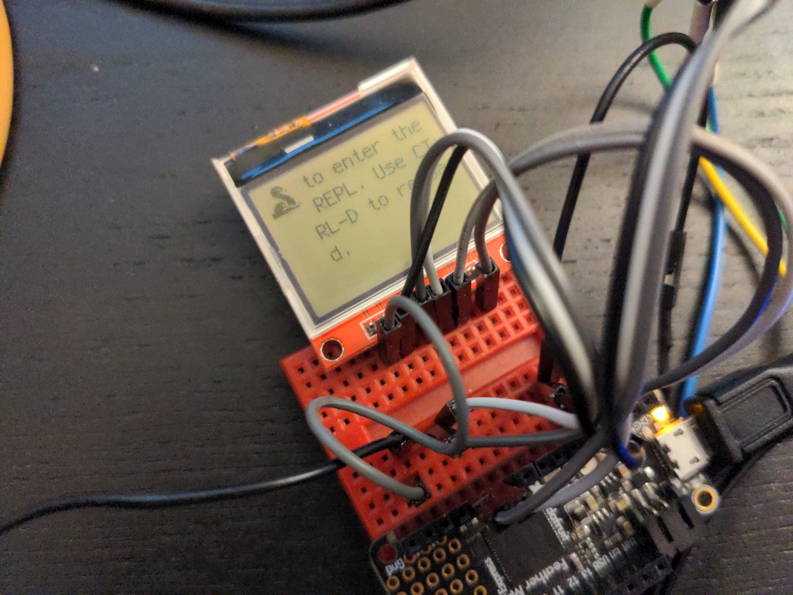

9-bit DisplayIO and CircuitPython¶
Published on 2022-05-10 in PewPew LCD.
When I was testing that breakout board for the display I’ve chosen, I immediately noticed a funny thing: while it uses the standard 4-wire SPI interface, it actually only has 3 wires: SCK, MOSI, and CS. There is no D/C pin! So how is the driver chip supposed to know if you are sending it data to be displayed or commands to execute? Well, the answer is simple yet brilliant – before every byte, you send it an additional bit that says if it’s data or command. So you effectively send it 9-bit words.
This is all great, and for testing it was relatively simple to just prepare the commands and data by shifting the bytes in the buffer and injecting the additional bits in between, but I really wanted this display to work with CircuitPython’s DisplalyIO library, so that when your program ends, you can see the REPL console and any errors or other messages. This required a little bit more work, but I made a path that adds this functionality to DisplayIO’s FourWire protocol implementation – basically if you don’t specify a command pin, it will assume 9-bit SPI.
With this solved, I proceeded to make a board definition for my device, with the display’s initialization compiled into the firmware, so that you can see things on the screen right from the beginning. Unfortunately I stumbled into a tricky bug then, which I wasn’t able to fix, and had to take a little break until it was solved by Dan Halbert.